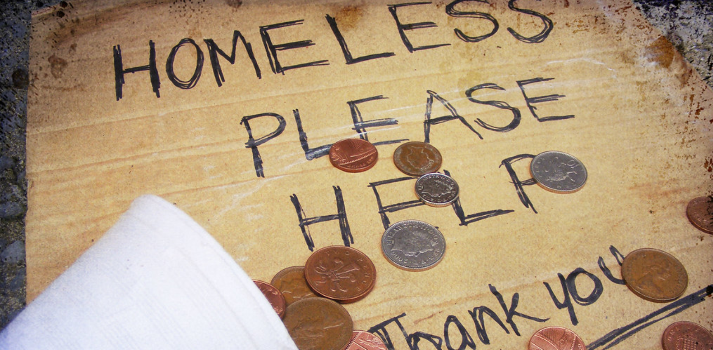

As a comunnity we want to work together to help and solve homelessness. There are many organizations that exist to help the homeless. Here's a list of organizations to support/donate to get started:
-National Alliance to End Homelessness
-National Coalition for the Homeless
-Robin Hood
-Common Bond
-NFYI
-Carpenter Shelter
Be sure to support and/or donate to local organizations and foundations near you that provide support for homeless people as well!
Thank you!